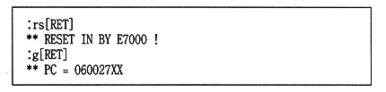
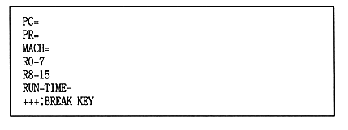

The flow of processing during debugging is as follows.
1 Create a binary file that should be placed on the CD.
2 Start by typing CDSIM.EXE from the MS-DOS prompt.
3 Just like reading a file from a CD using the CD file system library,
Read files from SCSI hard disk.
● Operations until program execution
The standard procedure from starting
ICE to executing the target program is shown below.
(1) Boot ROM boot
1 Boots the BOOT ROM.

2 When the logo is displayed, press [Ctrl-C].

(2) PC startup
1 Turn on or reset the PC.
The following message is displayed during startup.
Note that the message “SEGA SATURN XXXX” is output.